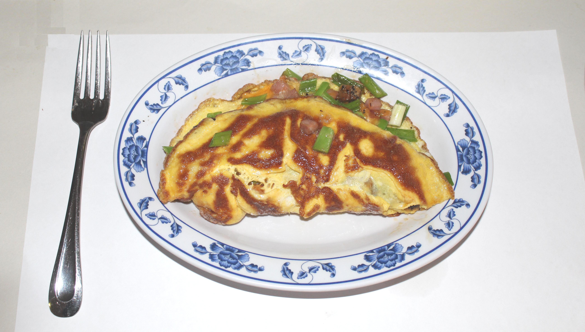

Omelette

- Preparation time: 5 min
- Cooking time: ~5 min
- Servings: Serves 1
Important Details:
- Vegan/Vegetarian: Vegetarian
- Potential Allergens: Egg
- Gluten-free: Yes
Ingredients
- 3 eggs
- 1 tsp. sunflower oil
OR
- 1 tsp. butter
Directions
- Crack the eggs and pour the yolks into a bowl or jug. Beat until viscous.
- Heat oil/butter in a frying pan over a medium-low heat, coating the surface.
- If using butter, heat until it has melted and foamed.
- Pour egg mixture into pan; tilt to cover surface completely.
- Egg mixture will begin to solidify; drag hardening sections into center of pan using spatula.
- Repeat step 3 until egg has completely set.
- (Optional) fill omelette with any desired toppings, such as cheese, ham or herbs.
- Fold omelette in half, slide onto plate and serve.
References
- Basic omelette recipe - BBC Good Food
- Omelette image - used under CCA 3.0 licence.
Contributors
- Written by Jordan Foster
- Recipe by BBC Good Food used as reference, along with personal experience.
{kind=link}